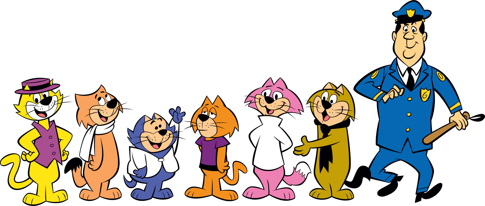

Don Gato
Don Gato, un gato amarillo con sombrero, chaleco violeta es el protagonista de la serie y líder de la pandilla de gatos, alrededor de los cuales la serie gira. Don Gato es traspuesto y persuasivo, un líder que puede también ser un amigo. En varias ocasiones la pandilla no hace caso a Don Gato, o malinterpretan sus intenciones, con resultados desastrosos. Un incidente de tales características se dio en el episodio "El cumpleaños de Matute", donde Don Gato planea vender todos los regalos de cumpleaños de Matute y termina regalándoselos. Muchos episodios se centran, naturalmente, en Don Gato, como el protagonista principal de la serie.
En el original su voz es interpretada por el comediante norteamericano Arnold Stang mientras que en el doblaje mexicano es interpretado por Julio Lucena
Panza
Panza aparece como un aliado común a Don Gato. Es seguidor, dulce al hablar y es regularmente visto hablando dulcemente con señoritas, antes de dejarlas al oír 'la llamada de la tapa del cubo de basura' de Don Gato. Es un gato anaranjado oscuro con una bufanda blanca. Él se asemeja en aspecto a Espanto, en la versión original su comportamiento y su voz se basaban en Cary Grant. En la versión mexicana es interpretado por Carlos Becerril.
Benito Bodoque
Benito es uno de los "mano derecha" de Don Gato. Es bajo, rechoncho, ingenuo, y lindo, un gato de color azul con un suéter blanco que se sujeta con un solo botón en su cuello. Benito puede aparecer como alguien simplón, pero él puede tener grandes ideas. Tal vez sea lento y a veces malinterpreta las cosas, pero no es estúpido. La relación entre Benito y Don Gato se basa en una amistad devota entre ellos. Un ejemplo de las longitudes a las cuales Don Gato irá a ayudar a Benito, es ilustrado en el episodio "La visita de la madre" en el cual Don Gato arregla para que Benito aparente ser el alcalde de Nueva York. varios episodios se han centrado en Benito, incluyendo "El Violinista", "Diamante Delicioso" y "El Heredero que Falta", aunque en varios capítulos se ha dicho que él es huérfano en un capítulo se hace pasar por el alcalde de la ciudad para poder sorprender a su mamá que viene desde lejos solo para poder ver si triunfó en la vida. En la versión Latinoamericana es interpretado por Jorge Arvizu "El Tata", Sergio de Bustamante en 2 capítulos y Salvador Gómes Castellanos en otros 3.
Demóstenes
Demóstenes aparece como un aliado común a Don Gato. Demóstenes es el miembro debilucho de la cuadrilla del callejón, un gato anaranjado con una camisa púrpura. Demóstenes es incapaz de guardar un secreto, además de que tartamudea al hablar, lo que le relaciona su nombre con el filósofo de la Antigua Grecia. Es el único de los gatos que posee reloj de pulsera, pese a no saber leer la hora. En la versión mexicana es interpretado por Armando Gutiérrez.
Cucho
Cucho es el segundo de los "mano derecha" de Don Gato. Él es un gato rosado con una camisa blanca de cuello alto y mangas largas. Con este personaje, se hace mención a México, ya que Cucho se dice ser nacido en Mérida, Yucatán, México y tiene un fuerte acento Yucateco en la versión mexicana. Es el más alto de los gatos de la pandilla, tiene los ojos de un gato siamés. Un par de episodios se han centrado en Cucho, entre ellos aquél en el cual intenta conquistar a Mimosa, una gata de alta alcurnia, o cuando quería tener una cita con la famosa actriz Lola Glamour, personificando a un personaje ficticio: el "Conde Chucho". En la versión mexicana, es interpretado por Jorge Arvizu y Sergio de Bustamante (2 capítulos).
Espanto
Espanto actúa como "criado" de Don Gato. Él es similar a Panza en personalidad y aspecto. Un gato que habla dulce, cuya palabra favorita parece ser 'comer'. Es un tiburón en el billar,y de una actitud bastante moderna y "en onda" acorde con la epoca, haciéndolo parecer en cierto modo un Beatnik, toca el contrabajo en un grupo de jazz. Tiene la piel marrón (o relativamente verde oscuro) y una corbata negra. En la versión mexicana es interpretado por Santiago Gil.
Oficial Matute
El Oficial Matute es el policía que vigila el callejón. Aunque, por lo general, a él le molesta la presencia de la pandilla en el callejón, hay momentos en los que los respeta y quiere. Hay varios episodios que se centran en el Oficial Matute. En la versión mexicana es interpretado por Víctor Alcocer. El oficial Matute en intentos de atraparlos siempre termina siendo parte de los trucos y artimañas de Don Gato y su pandilla, y a veces queda mal librado de este. En el episodio en que la pandilla encuentra y adopta un bebé, proponen ponerle el nombre Carlitos, como el Oficial Matute, así pues,el nombre completo del oficial es Carlos E. Matute en español y Charles E. Dibble en inglés.